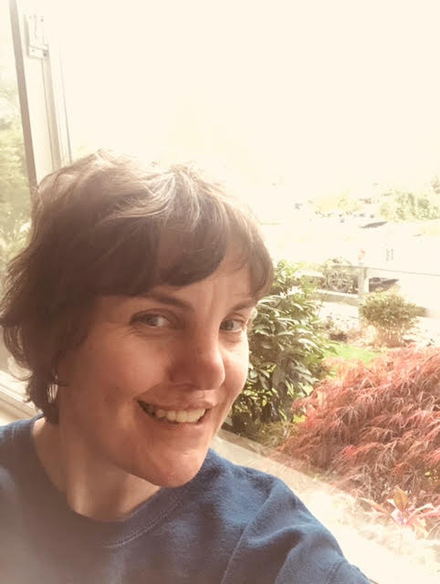
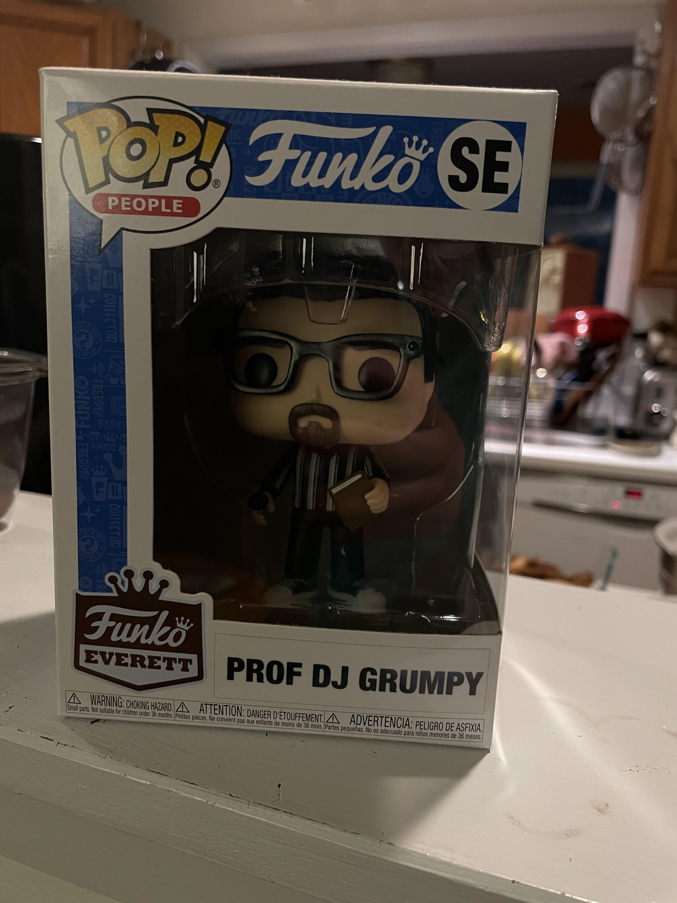
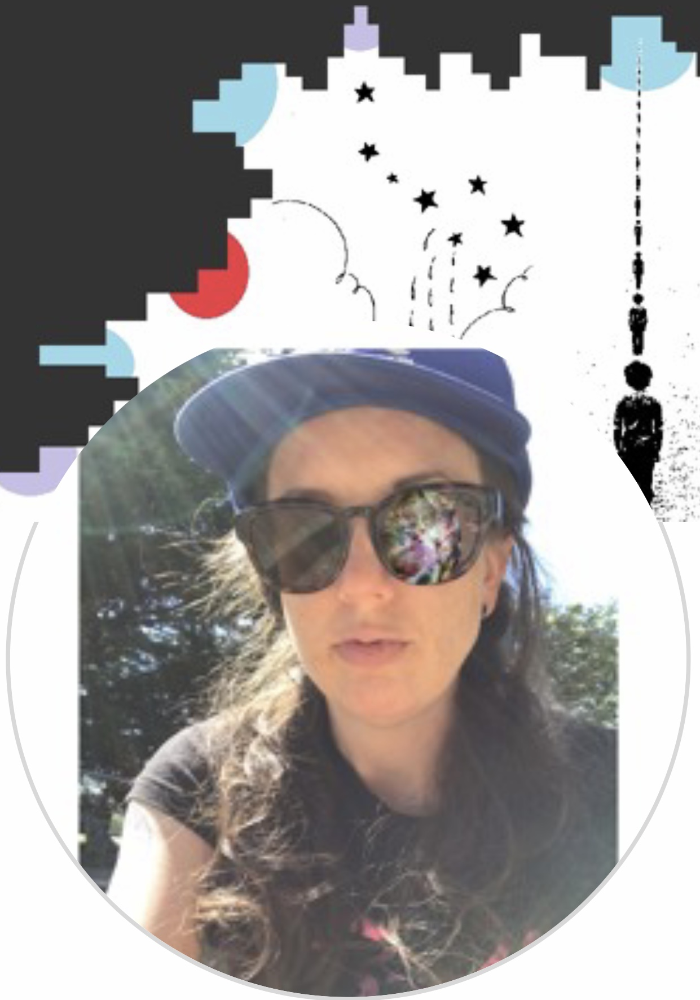
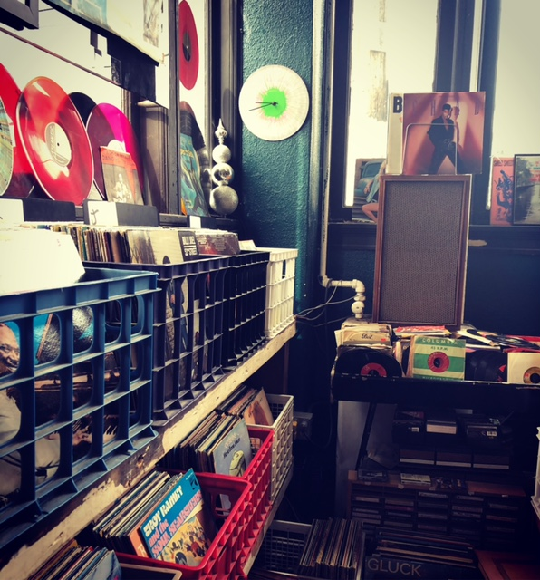
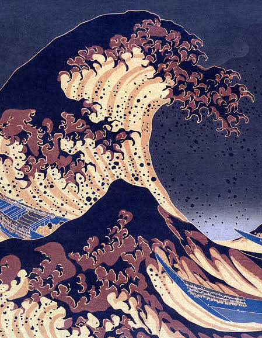

Programs, Schedule, and Popular Music on Space FM
Top songs this month
- Lucifer on the Sofa, Spoon
- Life On Earth, HURRAY FOR THE RIFF RAFF
- The Boy Named If, ELVIS COSTELLO AND THE IMPOSTERS
- Laurel Hell, MITSKI
- Dragon New Warm Mountain I Believe In You, BIG THIEF
- "Everything Is Simple" [Single], WIDOWSPEAK
- POHORYLLE, MARGO CILKER
- El Deafo, WAXAHATCHEE
- "Jackie Down The Line" [Single], FONTAINES DC
- Cold As Weiss, DELVON LAMARR ORGAN TRIO
Programs
Check out a preview of our diverse programs, running 7 days a week.
Head's Up - Saturday Nights
Two hours of the best surf sounds in Seattle. Classic and local surf rock with no messy vocals.

Bargain Bin Vinyl Hour - Tuesday Nights
Join Megan Tuesday's at 8pm to dive deep into the budget bins of our local record stores.

History as Music, Music as History - Sunday Nights
An exploration of music, history, and everything in-between. Hosted by Professor DJ Grumpy.

Transcend this Temporal Plane - Wednesday Nights
Weekly mind exploration powered by pop music through the ages.
Schedule
Monday
7-9 PM Roots Roundup
Tuesday
5 PM Northwest Orbit
9-11 PM Magnuson Blues
Wednesday
7-9 PM World Beat Adventure
9-10 PM Transcend This Temporal Plane
10-11 PM Love Potion no. 69
Thursday
2-2:30 PM SoundPages
3-4 PM The Bridge
7-8 PM Soundtrack Cinema
8-9 PM Vinyl Jacket
9-11 PM Jazz Punks
11-midnight Vanishing Point


Friday
7-9 PM Wedgwood Rocks
9-10 PM Pop Songs Your New Boyfriend's Too Stupid to Know About
10-11 PM Maximum Rock and Roll
Saturday
4-5 PM Juke in the Back
5-7 PM Up the River
7-9 PM Jet Set
9-11 PM Head’s Up
11-2 AM Story Untold
Sunday
7-8 AM Radio Survivor
12-2 PM American Routes
6-7 PM History as Music, Music as History
7-8 PM Johnny Cool's Happy Hour
8-8:30 PM Broken, Alaska
9-10 PM Sound Improv Live! (2nd Sunday)
At all times of the day (and night) where our special programs aren't airing, we present SPACE MIX - a tailored blend of the best new music, vintage alternative rock, classic R&B, with healthy amounts of local music, and unexpected delights. SPACE MIX is expertly curated by our music director Eric Z.
Contact us about music
SPACE 101.1 LPFM is a service of Sand Point Arts and Cultural Exchange (SPACE). Funding, facilitating and promoting arts and cultural uses of Magnuson Park for the public.
SPACE is a 501(c)(3), EIN 91-1712171.
Powered in part with the support of
Seattle Parks and Recreation